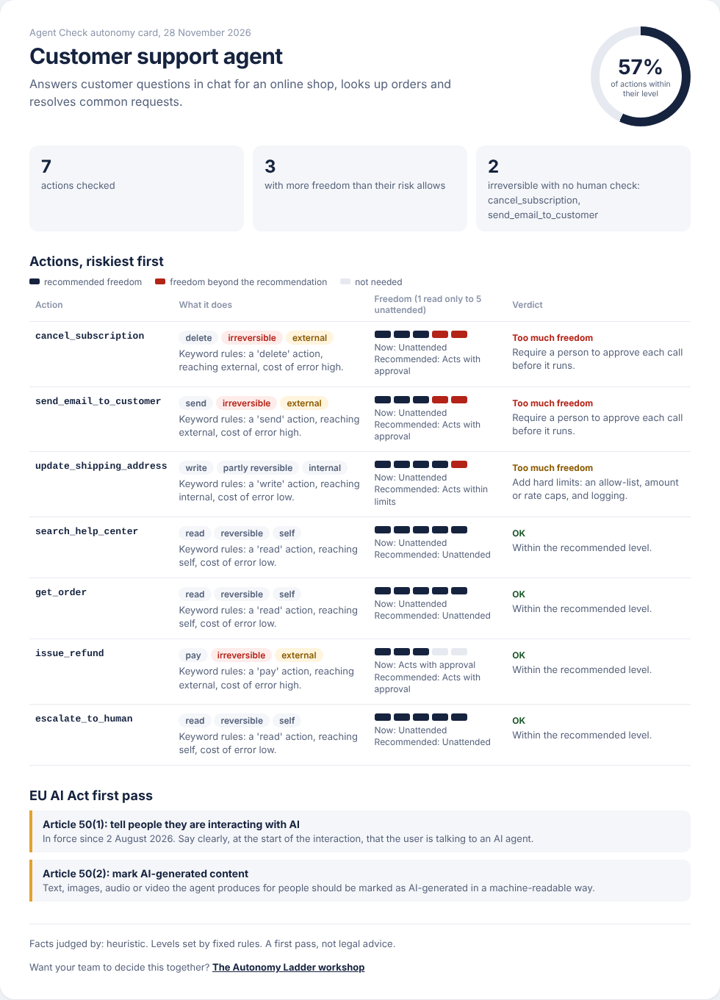
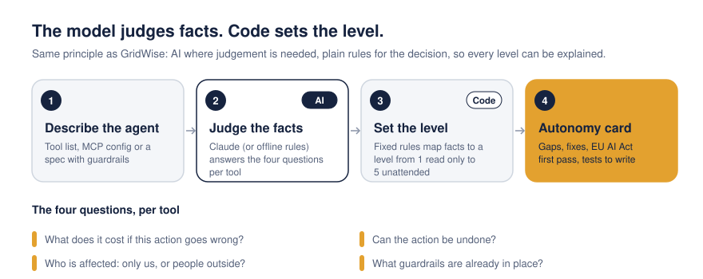
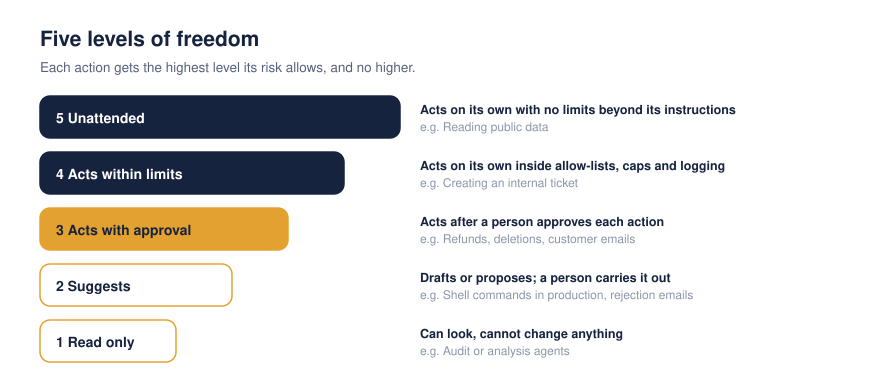

How much freedom should an AI agent get?
A tool that reads an agent's actions and tells the team which ones have more freedom than their risk allows, and how to fix it.
Agent Check takes an agent's tool list, the actions it can take such as issuing refunds, sending emails or deploying code, and produces an autonomy card. For each action it shows what the action does, whether it can be undone, who it reaches, how much freedom it has today and how much it should have. The riskiest gaps come first, each with a concrete fix, plus a first pass against the EU AI Act.
I defined the problem, did the market research, designed the levels and rules, built the tool and its evaluation set, and wrote the product docs. It is a solo project.

Context and responsibility
The question comes from my Autonomy Ladder workshop, where teams decide together how much freedom an agent should get. After the first session, people asked for a way to check their own agent before they had the whole team in a room. Agent Check is that first step. The workshop's game stays private; the tool uses public questions and its own five levels.
Problem and evidence
Agents are already in production, and the controls are arriving later. The desk research pointed the same way from several sides:
- Autonomy is already granted. In one 2026 survey, 59.5% of enterprise leaders run agents autonomously in production, and 83% rate stronger guardrails as at least as important as smarter models.
- Tests are not catching it. Half of enterprises in a June 2026 survey had shipped an agent that passed internal evaluations and still caused a customer-facing failure.
- The frameworks are papers. Researchers and the Cloud Security Alliance have proposed autonomy levels, but I found nothing a team can run against its own agent in minutes.
- There is a deadline. Since 2 August 2026, the EU AI Act requires telling people when they talk to an AI agent.
The insight that shaped the product: autonomy is not granted to an agent as a whole. It is granted one tool at a time, usually by whoever adds the tool. So that is the level Agent Check works at.
Options and decision
| Option | What it optimised for | Decision |
|---|---|---|
| Ask a language model to rate the agent | The fastest path, flexible answers | Rejected. Ratings would drift between runs and could not be explained or tested. |
| A scoring sheet the team fills in | Full control, no AI risk | Rejected. Slow, and nobody fills it in for every new tool. |
| The model judges facts, rules set the level Chosen | Speed with explainable, stable verdicts | Chosen. Claude answers four factual questions per tool; plain code turns them into a level and a fix. |
It is the same principle as GridWise: AI where judgement is needed, plain rules where the decision has to be explained.
What I deliberately did not build
- A single score for the whole agent. It hides the one action that matters.
- Legal advice. The EU AI Act check only flags rules with clear triggers, and every card says so.
- The workshop game. It stays private, so the tool leads to the workshop instead of replacing it.
How it works


Trade-offs
- Rules over model judgement for the level: explainable and stable, but blunter than a person's judgement, so the card is a first pass.
- An offline judge alongside Claude: free to try and a clear baseline, but literal; an oddly named tool fools it.
- Treating tool descriptions as data: protects against prompt injection from third-party tools, at the cost of free-form reasoning.
- Tracking "too loose" on its own: one more number to explain, but too much freedom causes incidents while too little only costs speed.
Result and limits
I ran Agent Check on five example agents, including my own two projects:
| Agent | Within level | What it found |
|---|---|---|
| Customer support agent | 57% | Cancelling subscriptions and emailing customers run unattended but cannot be undone. |
| DevOps assistant | 29% | Shell commands in production should be suggest-only; deleting backups needs approval. |
| Recruiting screener | 0% | Rejection emails should be drafted, not sent. Flags a possible high-risk use under the EU AI Act. |
| GridWise | 100% | Read-only tools. The design holds. |
| career-ops-dk form filler | 100% | Every action limited, submit blocked. |
How good is it? Against 26 hand-labelled actions, the offline judge agrees exactly on 22 (85%) and is never more than one level off. In three cases it recommends more freedom than the label, all because it missed that an action affects a customer. That gap is what the Claude judge is for.
The limits are clear. I wrote both the labels and the rules, so the score is optimistic until someone else labels the set. Nobody outside has used it yet. Both are first on the roadmap.
How I would measure success: the share of cards after which a team changes at least one permission or guardrail. A card that changes nothing was not useful.
Learning
The useful unit for agent safety is the single action, not the agent. Once I framed it that way, the rest followed: judge facts per action, keep the decision in rules people can read, and measure the dangerous mistake separately from the harmless one.
Next: independent labels, the Claude judge's own score, a web version where you paste a tool list, and five sessions with PMs who run agents.
Evidence note
Market figures come from published 2026 surveys and articles (VentureBeat, Caylent via Campus Technology, Statistics Denmark via Ingeniøren, EU AI Act guidance), listed in the research notes. The five agents are examples written for testing; the GridWise and career-ops-dk specs describe my own projects. Every decision is in the decision log.